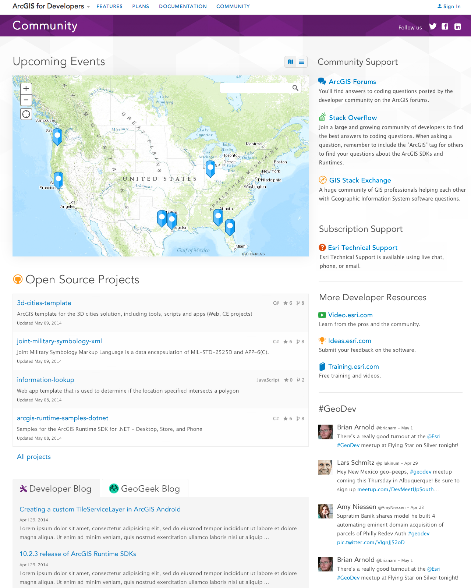
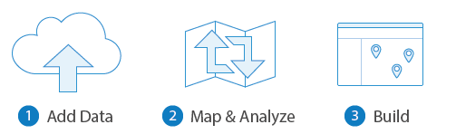

GeoDev Meetup
@Al_Laframboise / alaframboise@esri.com / alaframboise.github.com
Meetups near you!
Meetup.com
Connect
Share
Questions
Upload pictures and presentations!
Staying Connected
"GeoDev"
DevSummit 2014
Developer Resources
esri.github.io

What's new?
Esri User Conference San Diego, July 14-18
Developer Site Enhancements
Improved site-wide search
Improved content
Developer Subscription (free)
GeoTriggers release!
New developers "Community" page...

New "How the heck do I make a map?"
New "GeoGeek" blog series

New JavaScript Web App Builder
Developer tip of the night!

Tonight
6:30 - 7:00 PM Keynote
- Frank D'Andrea, VP of Development, Tator Tot Designs
- "Is that a Beacon in Your Pocket?: How Good Geo-Fences will Make Good Gadgets"
7:30 - 8:30 PM Lightning Talks
- Matthew Hampton, "Bringing Historical Maps to Life"
- Patrick Arlt, "Whats new with Esri Leaflet"
- Kerry Halligan, "An Advanced Mobile Solution for Forest Health Monitoring"
- Mike Psaris, "Using Data on Frequency of Use and Diversity of Activities to Prioritize Forest Road Decommissioning"
- Nate Goldman, "Civic Hacking in Portland"
- Robert Krisher, "Custom Javascript KML Renderer"
- Mitch Besser, "Coordinate System Question"
Trivia + Prizes
- EDN Subscription
- DevSummit Pass